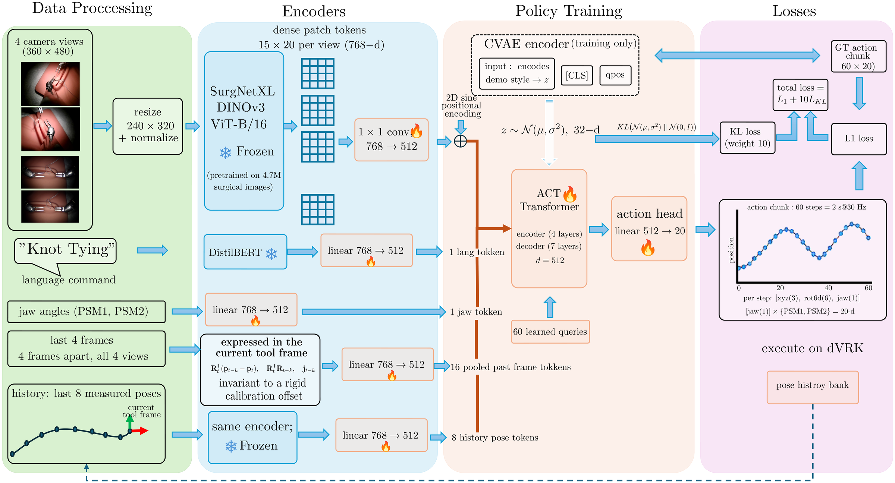
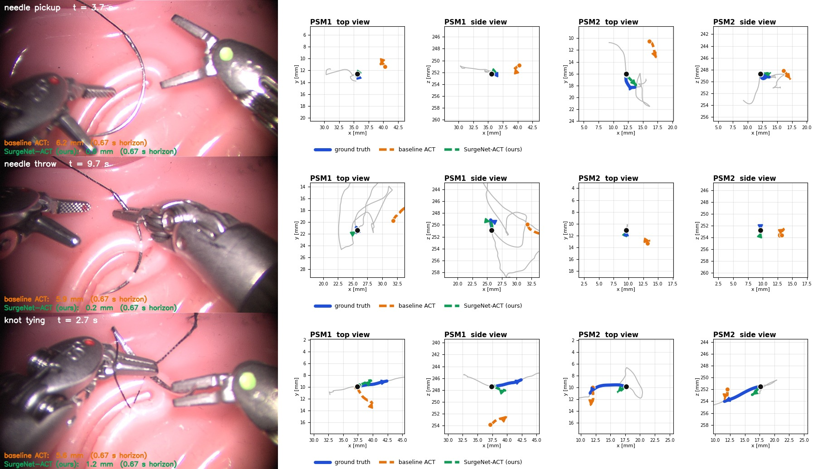
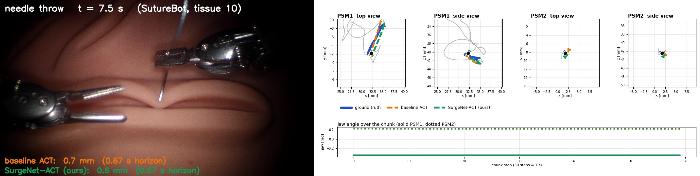
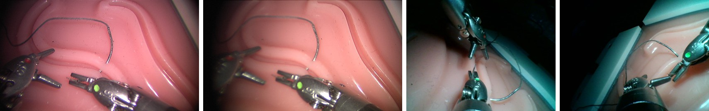

Abstract
Autonomous suturing on the da Vinci Research Kit (dVRK) is learned from a few dozen teleoperated demonstrations and must keep working on the same robot across days. Policies that regress absolute end-effector poses fail this test: the camera-to-robot calibration changes between sessions and the policy inherits the offset in full. We present SurgeNet-ACT, a framework that encodes the camera views with SurgeNetXL, a frozen surgical foundation model, and predicts action chunks with an ACT policy as displacements and rotations in the tool frame of the measured pose, with recent measured poses as temporal context. We evaluate on the public SutureBot benchmark and on the dVRK-Sessions Benchmark, 84 bimanual demonstrations of needle pickup, needle throw and knot tying from three sessions. The frozen encoder lowers position error on every core phase of SutureBot's held-out tissue and cuts offset-corrected error on our robot from 4.5 / 3.8 to about 3.2 mm; LoRA, partial fine-tuning and cross-dataset pre-training add nothing. Tool-frame actions make the policy insensitive to the calibration change between sessions, cutting raw error on an unseen session from 4.6 to 1.06 mm and rotation error from 21 to 3.1 degrees. The final policy reaches 0.78 / 0.79 mm and 3.0 degrees on two unseen sessions at 30 Hz, and a per-demonstration protocol shows where offline evaluation stops ranking policies.
Framework
Four stages. A frozen SurgeNetXL encoder (DINOv3 ViT-B/16, pre-trained on 4.7 million surgical frames) turns each camera view into a grid of patch tokens. The tokens, the phase command, the jaw angles, a CVAE latent and the temporal-context tokens form the memory of an ACT transformer encoder. An ACT decoder reads out the chunk in the tool frame of the measured pose. The chunk is composed with the measured pose into absolute setpoints for the dVRK. The measured pose enters only at the last stage, and the history tokens are built from measured poses, never from the policy's own outputs.

Results
SutureBot Benchmark, held-out tissue
Per-axis L1 error of the predicted 60-step chunk on tissue sample 10 (12 demonstrations, every frame), PSM1 / PSM2 in mm. Same ACT head, different encoder.
| Phase | ACT (EfficientNet-B3) | SurgeNet-ACT |
|---|---|---|
| Needle pickup | 0.32 / 0.31 | 0.30 / 0.27 |
| Needle throw | 0.71 / 0.28 | 0.55 / 0.20 |
| Knot tying | 0.42 / 0.42 | 0.36 / 0.34 |
| All phases (incl. recovery) | 1.16 / 0.84 | 1.10 / 0.78 |
dVRK-Sessions Benchmark, unseen session
First split: position error over the first 20 steps (0.67 s), PSM1 / PSM2 in mm, raw and offset-corrected, and rotation error. Three seeds where given.
| Policy | Raw | Offset-corr. | Rot. |
|---|---|---|---|
| ACT (ResNet-18, absolute) | 6.74 / 5.05 | 4.45 / 3.84 | 23.5° |
| SurgeNet-ACT (absolute) | 4.61 / 4.41 | 3.22 / 3.29 | 21.1° |
| SurgeNet-ACT (tool-frame) | 1.06 / 1.07 | 1.04 / 1.03 | 3.1° |


Full tables, ablations (adaptation, history length, chunk length, policy heads) and the per-demonstration protocol are in the paper.
Videos
Baseline ACT and the deployed SurgeNet-ACT policy run frame by frame on held-out recordings. Left: camera view with the demonstrated chunk (blue), baseline (orange) and ours (green). Right: position error over time for both arms.
Videos of all six held-out dVRK-Sessions demonstrations will be added with the full release.
dVRK-Sessions Benchmark
Bimanual suturing demonstrations recorded on our dVRK with two patient-side manipulators, a stereo endoscope and one wrist camera per arm, all at 30 Hz. Each frame stores the measured pose, the commanded setpoint and the jaw angle of each arm, the joint states of the arms, the endoscope and the setup joints, and the four images; kinematics are expressed in the left endoscope camera frame. Three recording sessions on two days let a policy be validated only on sessions it never saw.

Annotations
Phase command per demonstration (needle pickup, needle throw, knot tying); clicked insertion and exit points for every needle-throw demonstration; a sub-task annotation that cuts the same demonstrations into 289 clips of 11 sub-tasks with text commands.
Splits
First split: 75 training / 6 validation demonstrations, one validation demonstration per phase from the training session and one from an unseen second-day session. Final split: 78 first-day training demonstrations, validation entirely on the two second-day sessions.
Folder layout of a demonstration
2_needle_throw/20260827-163621_sh_t1/ ee_csv.csv kinematics at 30 Hz, robot frame (149 columns) ee_csv_refer.csv same rows re-expressed in the left endoscope camera frame ee_csv_refer.json per-arm extrinsics used for the re-expression clicked_point.csv needle insertion and exit points (pixels, left image); throw only left_img_dir/ right_img_dir/ stereo endoscope, 960x540 JPEG endo_psm1/ endo_psm2/ wrist cameras, 640x480 JPEG rgbd_color/ rgbd_depth/ RealSense D455, 848x480 (not used by the policies)